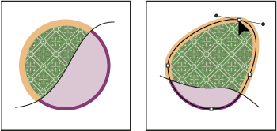
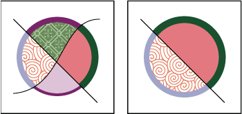
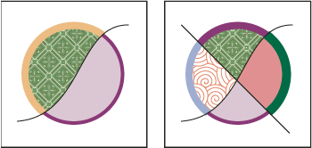

Modify Live Paint groups
When you modify a path in a Live Paint group, Illustrator colors the modified or new faces and edges using fills and strokes from the existing group. If the results are not what you expect, you can reapply the colors you want using the Live Paint Bucket tool.

When you delete edges, the fill floods across any newly expanded face. For example, if you delete a path that divides a circle in half, the circle is filled with one of the fills previously in the circle. You can sometimes help guide the results. For instance, before deleting a path that divides a circle, first move it so that the fill you want to keep is larger than the fill you want to remove.

 Save the fill
and stroke colors used in Live Paint groups in the Swatches panel. That
way, if a change loses a color you want to keep, you can select
its swatch and use the Live Paint Bucket tool to reapply the fill
or stroke.
Save the fill
and stroke colors used in Live Paint groups in the Swatches panel. That
way, if a change loses a color you want to keep, you can select
its swatch and use the Live Paint Bucket tool to reapply the fill
or stroke. Add paths to a Live Paint group
Add paths to a Live Paint group
As you add more paths to the Live Paint group, you can fill and stroke the new faces and edges that are created.

 Do any of the following:
Do any of the following:-
Using the Selection tool, double-click a Live Paint group (or click the Isolate Selected Group button in the Control panel) to put the group into isolation mode. Then draw another path. Illustrator adds the new path to the Live Paint group. Click the Exit Isolation Mode button when you’re done adding new paths.
-
Select a Live Paint group and the paths you want to add to it. Then choose Object > Live Paint > Merge, or click Merge Live Paint in the Control panel.
-
In the Layers panel, drag one or more paths into a Live Paint group.
Note: Paths inside a Live Paint group may not exactly align with similar or identical paths outside the Live Paint group.
Resize an individual object or path
Do one of the following: -
Using the Direct Selection tool, click the path or object to select it. Then choose the Selection tool and click the path or object again to edit it.
-
Using the Selection tool, double-click the Live Paint Group to put it into isolation mode. Then click a path or object to edit it.